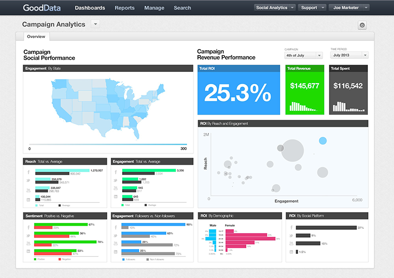
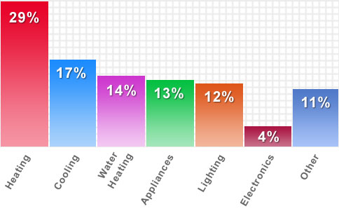
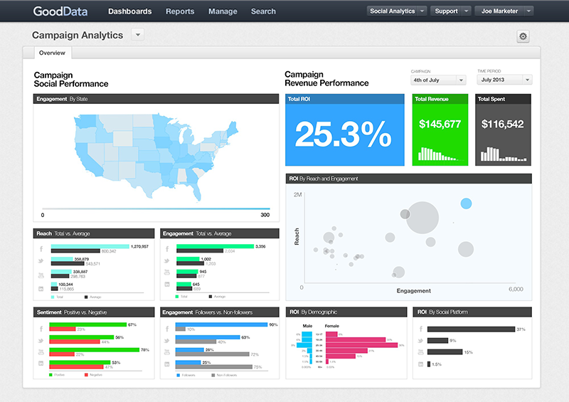
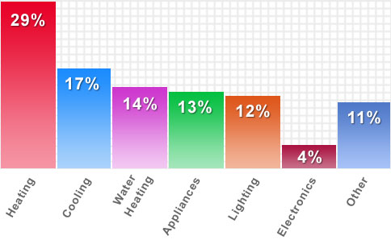
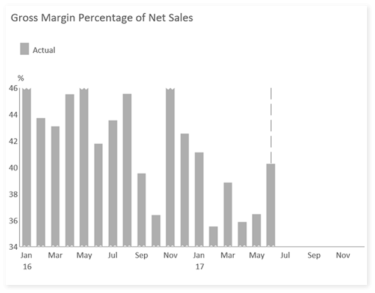
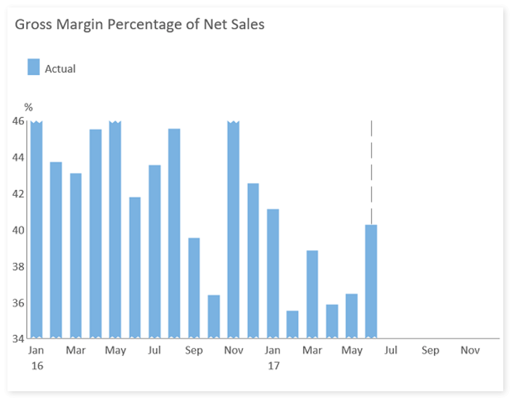
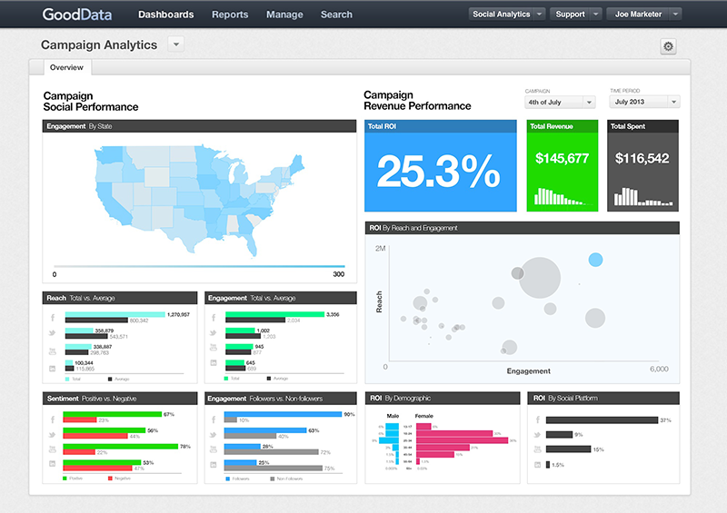
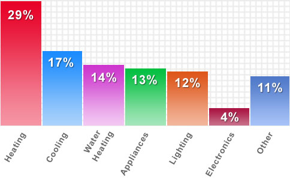
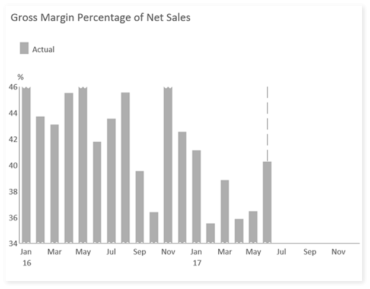
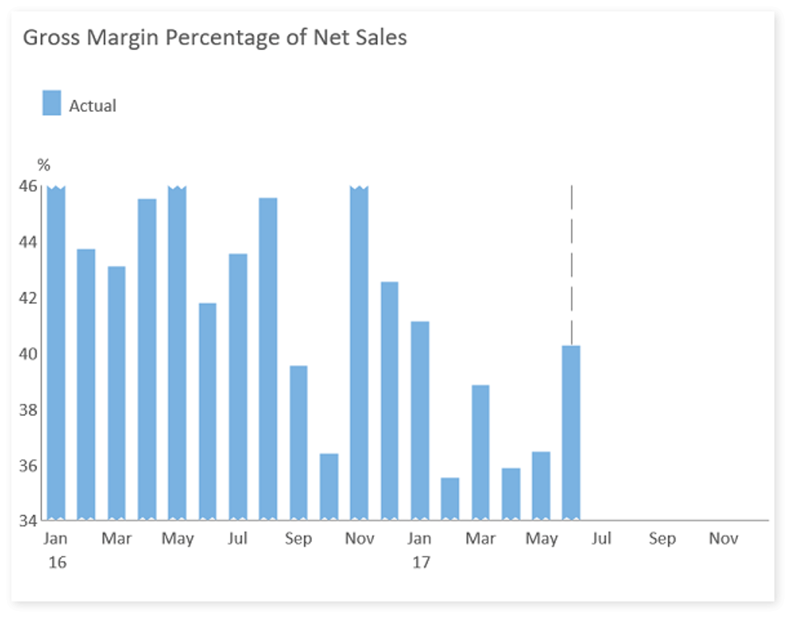

Visualizations and the audience.
In her work on storytelling with data Knaflic Cole puts forward the concept of preattentiveness, where attributes like size, color, and position on page can be used strategically as leveraged that directs the audience’s attention to where you want them to focus it (Knaflic, 2015). Furthermore, this concept helps frame a visual hierarchy of what is important and what should be seen first.
(Janiszewski, 1993) argues that” the first glance exposure to a brand name or product package can encourage a consumer to have a more favorable attitude toward the brand, even when the consumer cannot recollect the initial exposure” this argument seems to suggest that there are visual cues, hidden and obvious that can be used to frame the reception of a product of media, a website in this case.
These cues seem to have layers of effectiveness. The first one being the initial preattentive where the special layouts or a font family or a color is used to draw the attention of the audience. Secondly, and a later stage at which a nuanced analysis is critical in conjoining the separate features into coherent objects.
In data visualization over the web the preattentive processing can be used to build visualization that give rise to dynamic interpretation s within the same static data frame. Drawing from the human anatomy studies, science has concluded that iconic memory, short‐term memory, and long‐term memory are the currently known layers of human memory. Iconic memory is closely associated with preattentive attributes strategically, from which we can silently direct the audience to see what we want them to see before they even know they are seeing it. The image below show how without visual, reading an image can shift from one version to another within a short space of time.

Bold text, color, italics, font size, outline, underline, and strikethrough are all visual cue devises which allow a website designer to make blocks of text stand out. With visualized data, it therefore imperative that the type of chart chosen will communicate the intended message. However, societal conventions of reading mead and textual constructs can also influence how different people may read something in completely distinct ways. The images below are different charts with different information. Of note is how the red or the brighter color stands out and directs the eye to read that portion of the chart first.
 



The images shown below are a comparison of the same graph in color and in gray scale. The colored graph seems to be communicating more effectives compared to the grayscale graph.


References.
Knaflic, C.N., 2015. Storytelling with data: A data visualization guide for business professionals. John Wiley & Sons.
Janiszewski, C. (1993) ‘Preattentive Mere Exposure Effects’, Journal of Consumer Research, 20(3), pp. 376–392. doi: 10.1086/209356.



